So far I have discussed strategic design with Bounded Contexts , Subdomains , and Context Maps. Here you see two Bounded Contexts , the Core Domain named Agile Project Management Context and a Supporting Subdomain that provides collaboration tools through Context Mapping integration.
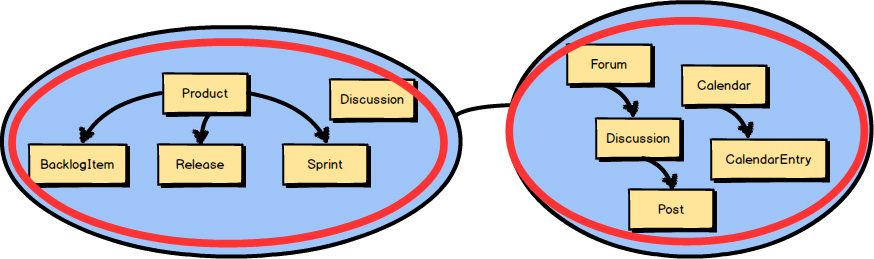
But what about the concepts that live inside a Bounded Context ? I’ve touched on these, but I will next cover them in more detail. They are likely the Aggregates in your model.
Each of the circled concepts that you see inside these two Bounded Contexts
is an Aggregate.
The one concept not circled—Discussion
—is modeled as a Value Object.
Even so, we are focused on Aggregates
in this chapter, and we will take a closer look at how to model Product
, BacklogItem
, Release
, and Sprint
.
What is an Aggregate ? Two are represented here. Each Aggregate is composed of one or more Entities , where one Entity is called the Aggregate Root. Aggregates may also have Value Objects composed on them. As you see here, Value Objects are used inside both Aggregates .
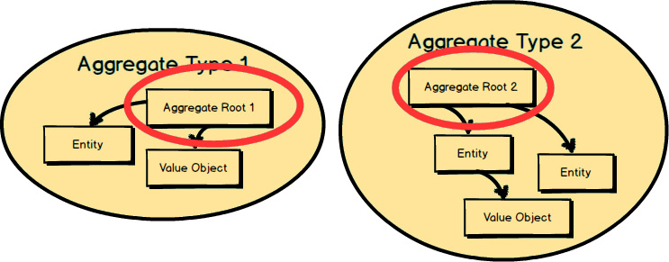
The Root Entity of each Aggregate owns all the other elements clustered inside it. The name of the Root Entity is the Aggregate ’s conceptual name. You should choose a name that properly describes the conceptual whole that the Aggregate models.
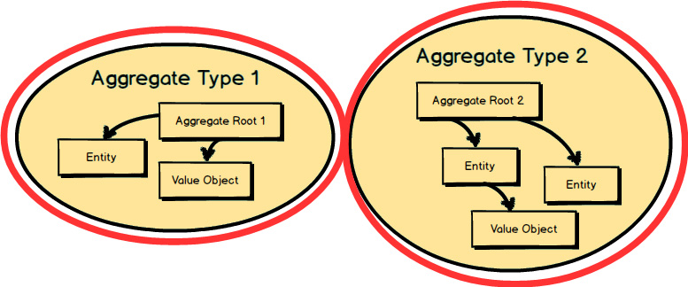
Each Aggregate
forms a transactional consistency boundary. This means that within a single Aggregate
, all composed parts must be consistent, according to business rules, when the controlling transaction is committed to the database. This doesn’t necessarily mean that you are not supposed to compose other elements within an Aggregate
that don’t need to be consistent after a transaction. After all, an Aggregate
also models a conceptual whole. But you should be first and foremost concerned with transactional consistency. The outer boundary drawn around Aggregate Type 1
and Aggregate Type 2
represents a separate transaction that will be in control of atomically persisting each object cluster.
The reasons for the transactional boundary are business motivated, because it is the business that determines what a valid state of the cluster should be at any given time. In other words, if the Aggregate was not stored in a whole and valid state, the business operation that was performed would be considered incorrect according to business rules.
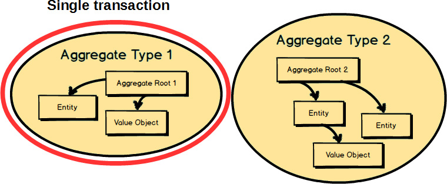
To think about this in a different way, consider this. Although two Aggregates
are represented here, only one of the two should be committed in a single transaction. That’s a general rule of Aggregate
design: modify and commit only one Aggregate
instance in one transaction. That’s why you see only the instance of Aggregate Type 1
within a transaction. We will look at the other rules of Aggregate
design soon.
Any other Aggregate
will be modified and committed in a separate transaction. That’s why an Aggregate
is said to be a transactional consistency boundary. So, you design your Aggregate
compositions in a way that allows for transactional consistency and success. As seen here, an instance of Aggregate Type 2
is controlled under a separate transaction from the instance of Aggregate Type 1
.
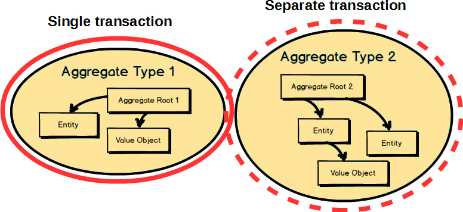
Since instances of these two Aggregates
are designed to be modified in separate transactions, how do we get the instance of Aggregate Type 2
updated based on changes made to the instance of Aggregate Type 1
, to which our domain model must react? That’s a good question; we will consider the answer to it a bit later in this chapter.
The main point to remember from this section is that business rules are the drivers for determining what must be whole, complete, and consistent at the end of a single transaction.
Let’s next consider the four basic rules of Aggregate design:
1. Protect business invariants inside Aggregate boundaries.
2. Design small Aggregates.
3. Reference other Aggregates by identity only.
4. Update other Aggregates using eventual consistency.
Of course, these rules are not necessarily strictly enforced by any “DDD police.” They are meant as sound guidance such that when thoughtfully applied, they will help you design Aggregates that work effectively. That being the case, we will now dig into each of these rules to see how they should be applied wherever possible.
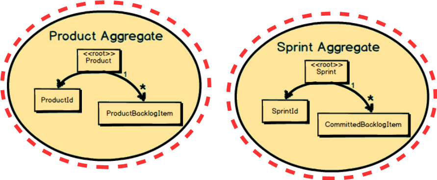
Rule 1 means that the business should ultimately determine Aggregate
compositions based on what must be consistent when a transaction is committed. In the example on page 81
, Product
is designed such that at the end of a transaction all composed ProductBacklogItem
instances must be accounted for and consistent with the Product
root. Also, Sprint
is designed such that at the end of a transaction all composed CommittedBacklogItem
instances must be accounted for and consistent with the Sprint
root.
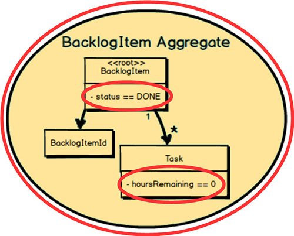
Rule 1 becomes clearer with another example. Here’s the BacklogItem
Aggregate.
There is a business rule that states, “When all Task
instances have hoursRemaining
of zero, the BacklogItem
status must be set to DONE
.” Thus, at the end of a transaction this very specific business invariant must be met. The business requires it.
This rule highlights that the memory footprint and transactional scope of each Aggregate
should be relatively small. In the preceding diagram the Aggregate
that is represented is not small. Here, Product
literally contains a potentially very large collection of BacklogItem
instances, a large collection of Release
instances, and a large collection of Sprint
instances. Over time, these collections could grow to be quite large, with thousands of BacklogItem
instances and probably hundreds of Release
and Sprint
instances. This design approach is generally a very poor choice.
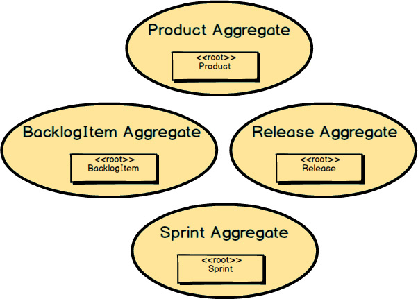
However, if we break up the Product
Aggregate
to form four separate Aggregates
, this is what we get: a small Product
Aggregate
, a small BacklogItem
Aggregate
, a small Release
Aggregate
, and a
small Sprint
Aggregate.
These load quickly, take less memory, and are faster to garbage collect. Perhaps most importantly, these Aggregates
will have transactional success much more frequently than the previous large-cluster Product
Aggregate.
Following this rule has the added benefit that each Aggregate will be easier to work on, because each associated task can be managed by a single developer. This also means that the Aggregate will be easier to test.
Another thing to keep in mind when designing Aggregates
is the Single Responsibility Principle
(SRP). If your Aggregate
is trying to do too many things, it is not following SRP, and this will likely be telling in its size. Ask yourself, for example, whether your Product
is a very focused implementation of a Scrum product, or if it is also trying to be other things. What is the reason to change Product
: to make it a better Scrum product, or to manage backlog items, releases, and sprints? You should change Product
only in order to make it a better Scrum product.
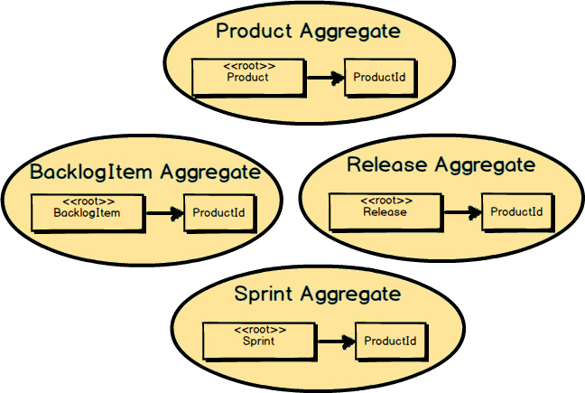
Now that we’ve broken up the large-cluster Product
into four smaller Aggregates
, how should each reference the others where needed? Here
we follow Rule 3, “Reference other Aggregates
by identity only.” In this example we see that BacklogItem
, Release
, and Sprint
all reference Product
by holding a ProductId
. This helps keep Aggregates
small and prevents reaching out to modify multiple Aggregates
in the same transaction.
This further helps keep the Aggregate design small and efficient, making for lower memory requirements and quicker loading from a persistence store. It also helps enforce the rule not to modify other Aggregate instances within the same transaction. With only identities of other Aggregates , there is no easy way to obtain a direct object reference to them.
Another benefit to using reference by identity only is that your Aggregates can be easily stored in just about any kind of persistence mechanism, such as relational database, document database, key-value store, and data grids/fabrics. This means that you have options to use a MySQL relational table, a JSON-based store such as PostgreSQL or MongoDB, GemFire/Geode, Coherence, and GigaSpaces.
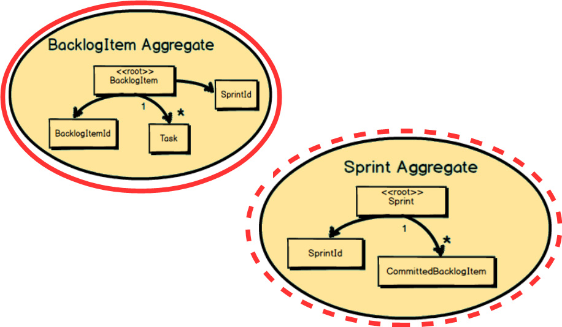
Here a BacklogItem
is committed to a Sprint
. Both the BacklogItem
and the Sprint
must react to this. It is first the BacklogItem
that
knows it has been committed to a Sprint
. This is managed in one transaction, when the state of the BacklogItem
is modified to contain the SprintId
of the Sprint
to which it is committed. So, how do we ensure that the Sprint
is also updated with the BacklogItemId
of the newly committed BacklogItem
?
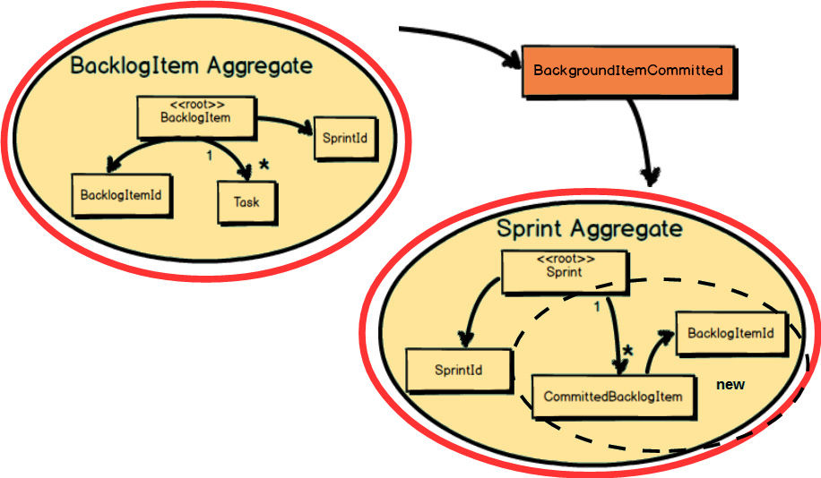
As part of the BacklogItem
Aggregate
’s transaction, it publishes a Domain Event
named BacklogItemCommitted
. The BacklogItem
transaction completes and its state is persisted along with the Backlog-ItemCommitted
Domain Event.
When the BacklogItemCommitted
makes its way to a local subscriber, a transaction is started and the state of the Sprint
is modified to hold the BacklogItemId
of the committed BacklogItem
. The Sprint
holds the BacklogItemId
inside a new CommittedBacklogItem
Entity.
Recall now what you learned in Chapter 4 , “Strategic Design with Context Mapping .” Domain Events are published by an Aggregate and subscribed to by an interested Bounded Context. The messaging mechanism delivers the Domain Events to interested parties by means of subscriptions. The interested Bounded Context can be the same one from which the Domain Event was published, or it could be different Bounded Contexts.
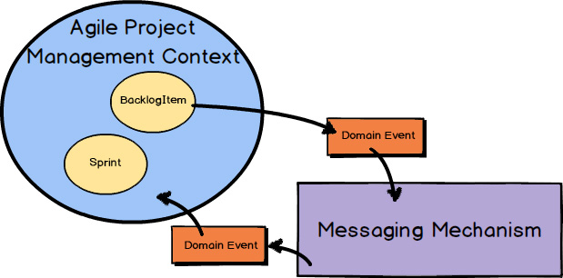
It’s just that in the case of the BacklogItem
Aggregate
and the Sprint
Aggregate
, the publisher and subscriber are in the same Bounded Context.
You don’t absolutely need to use a full-blown
messaging middleware product for this case, but it’s easy to do so since you already use it for publishing to other Bounded Contexts.
There are a few hooks waiting for you as you work on your domain model, implementing your Aggregates. One big, nasty hook is the Anemic Domain Model [IDDD] . This is where you are using an object-oriented domain model, and all of your Aggregates have only public accessors (getters and setters) but no real business behavior. This tends to happen when there is a technical rather than business focus during modeling. Designing an Anemic Domain Model requires you to take on all the overhead of a domain model without realizing any of its benefits. Don’t take the bait!
Also watch out for leaking business logic into the Application Services above your domain model. It can happen undetected, just like physical anemia. Delegating business logic from services to helper/utility classes isn’t going to work out well either. Service utilities always exhibit an identity crisis and can never keep their stories straight. Place your business logic in your domain model, or suffer bugs sponsored by an Anemic Domain Model.
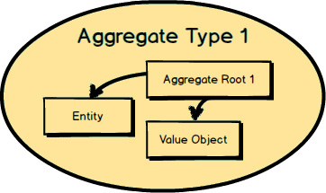
Next I’m going to show you some of the technical components you will need to implement a basic Aggregate design. I assume you are using Scala, C#, Java, or another object-oriented programming language. The following examples are in C# but are very understandable by Scala, F#, Java, Ruby, Python, and other programmers alike.
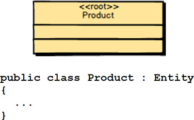
The first thing you must do is create a class for your Aggregate Root Entity.
Here is a UML (Unified Modeling Language) representation of the Product
Root Entity.
Included is also the Product
class in C#, which extends a base class named Entity
. This base class just takes care of standard Entity
kinds of things. See Implementing Domain-Driven Design
[IDDD]
for exhaustive discussions on both Entity
and Aggregate
design and implementation.
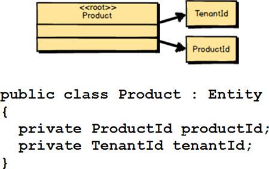
Every Aggregate Root Entity
must have a globally unique identity. A Product
in the Agile Project Management Context
actually has two forms of globally unique identity. The TenantId
scopes the Root Entity
inside a given subscriber organization. (Every organization that subscribes to the offered services is known as a tenant and thus has a unique identity for that.) The second identity, which is also globally unique, is the ProductId
. This second identity sets the Product
apart from all others within the same tenant. Also included is the C# code that declares the two identities inside Product
.
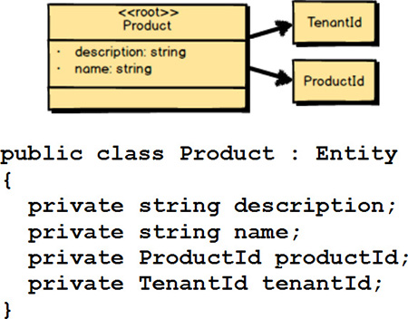
Next you capture any intrinsic attributes or fields that are necessary for finding the Aggregate.
In the case of Product
, there are both description
and name
. Users can search one or both of these to find each Product
. I also provide the C# code that declares these two intrinsic attributes.
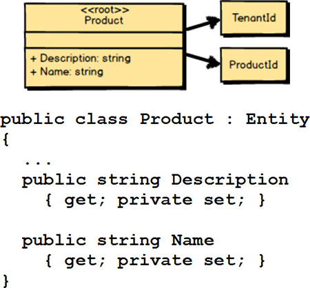
Of course, you can add simple behavior such as read accessors (getters) for intrinsic attributes. In C# this would probably be done using public property getters. However, you may not want to expose setters as public. Without public setters, how do property/attribute values change? When using an object-oriented approach (C#, Scala, and Java), you change internal state using behavioral methods. If using a functional approach (F#, Scala, and Clojure), the functions will return new values that are different from the values passed as arguments.
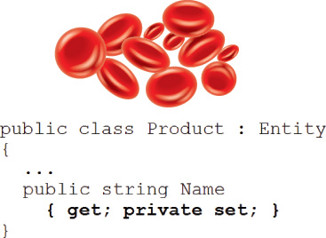
You should be on a mission to fight the Anemic Domain Model
[IDDD]
. If you expose public setter methods, it could quickly lead to anemia, because the logic for setting values on Product
would be implemented outside the model. Think hard before doing this, and keep this warning in mind.
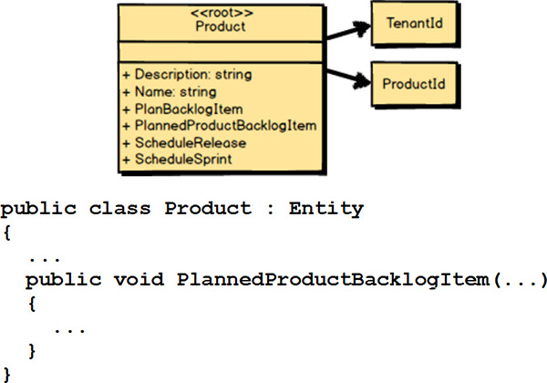
Finally, you add in any complex behavior. Here we’ve got four new methods: PlanBacklogItem()
, PlannedProductBacklogItem()
, ScheduleRelease()
, and ScheduleSprint()
. The C# code for each of these methods should be added to the class.

Remember, when using DDD, we are always modeling a Ubiquitous Language
inside a Bounded Context.
Thus, all parts of the Product
Aggregate
are modeled per the Ubiquitous Language.
You don’t just make up these composed parts. Everything shows harmony between Domain Experts
and developers of your close-knit team.
An effective software model is always based on a set of abstractions that address the business’s way of doing things. There is, however, the need to choose the appropriate level of abstraction for each concept being modeled.
If you follow the direction of your Ubiquitous Language , you will generally create the proper abstractions. It’s much easier to model the abstractions correctly because it is the Domain Experts who convey at least the genesis of your modeling language. Still, sometimes software developers who are overzealous for solving the wrong problems will try to force in abstractions that are, well, too abstract.
For example, in the Agile Project Management Context
we are dealing with Scrum. It makes sense to model Product
, BacklogItem
, Release
, and Sprint
concepts that we’ve been discussing. Even so, what if the software developers were less concerned about modeling the
Ubiquitous Language
of Scrum, and more interested in modeling a solution to all current and future Scrum concepts?
If this angle were pursued, the developers would probably come up with abstractions such as ScrumElement
and ScrumElementContainer
. A ScrumElement
could fill the current need for Product
and Backlog-Item
, and ScrumElementContainer
could represent the obviously more explicit concepts of Release
and Sprint
. The ScrumElement
would have a typeName
property, and it would be set to "Product"
or "BacklogItem"
in appropriate cases. We could design the same kind of typeName
property for ScrumElementContainer
and allow the values "Release"
or "Sprint"
to be set on it.
Do you see the problems with this approach? There are more than a few, but consider the following:
• The language of the software model does not match the mental model of the Domain Experts.
• The level of abstraction is too high, and you will get into deep trouble when you start to model the details of each of the individual types.
• This will lead to creating special cases in each of the classes and likely result in a complex class hierarchy with general approaches to explicit problems.
• You will have much more code than you need, because you are trying to solve an unsolvable problem that should not matter in the first place.
• Often the language of the wrong abstractions will find its way even into the user interface, which will cause confusion for users.
• You will waste considerable time and money.
• You will never be able to address all future needs up front, which means if new Scrum concepts are ever added in the future, your existing model will prove to be a failure in foreseeing those needs.
Following such a path may seem strange to some, but this incorrect level of abstractions is used often in technically inspired implementations.
Don’t get taken in by this alluring, highly abstract implementation trap. Model the Ubiquitous Language explicitly according to the mental model of the Domain Experts that is refined by your team. By modeling what the business needs today, you will save a considerable amount of time, budget, code, and embarrassment. More still, you will do the business a great service by modeling an accurate and useful Bounded Context that reflects an effective design.
You may be wondering how you can determine the boundaries of Aggregates and prevent the design of large clusters, while still maintaining consistency boundaries that will protect true business invariants. Here I have provided a worthy design approach. If you have already created large-cluster Aggregates , you can use this approach to refactor into smaller ones, but I am not going to start from that perspective.
Consider these design steps that will help you reach consistency boundary goals:
1. Put your first focus on the second rule of Aggregate design, “Design small Aggregates. ” Start by creating every Aggregate with just one Entity , which will serve as the Aggregate Root. Don’t even dare to place two Entities in a single boundary. That opportunity will come soon enough. Populate each of the Entities with the fields/attributes/properties that you believe are most closely associated with the single Root Entity. One big hint here is to define every field/attribute/property that is required to identify and find the Aggregate , as well as any additional intrinsic fields/attributes/properties that are required for the Aggregate to be constructed and left in a valid initial state.
2. Now place your focus on the first rule of Aggregate design, “Protect business invariants inside Aggregate boundaries.” You have already asserted by the previous step that at a minimum all the intrinsic fields/attributes must be up-to-date when the single-Entity Aggregate is persisted. But now you need to look at each of your Aggregates one at a time. As you do so for Aggregate A1, ask the Domain Experts if any other Aggregates you have defined must be updated in reaction to changes made to Aggregate A1. Make a list of each of the Aggregates and their consistency rules, which will indicate the time frames for all reaction-based updates. In other words, “Aggregate A1” would be the heading of one list, and other Aggregate types would be listed under A1 if they will be updated in reaction to A1 updates.
3. Now ask the Domain Experts how much time may elapse until each of the reaction-based updates may take place. This will lead to two kinds of specifications: (a) immediately, and (b) within N seconds/minutes/hours/days. One possible way to find the correct business threshold is by presenting an exaggerated time frame (such as weeks or months) that is obviously unacceptable. This will likely cause business experts to respond with an acceptable time frame.
4. For each of the immediate time frames (3a), you should strongly consider composing those two Entities within the same Aggregate boundary. That means, for example, that Aggregate A1 and Aggregate A2 will actually be composed into a new Aggregate A[1,2]. Now Aggregates A1 and A2 as they were previously defined will no longer exist. There is only Aggregate A[1,2].
5. For each of the reacting Aggregates that can be updated following a given elapsed time (3b), you will update these using the fourth rule of Aggregate design, “Update other Aggregates using eventual consistency.”
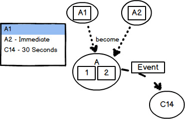
In this figure our focus is on modeling Aggregate A1. Note from the A1 list of consistency rules that A2 has an immediate time frame, while C14 has an eventual (30 seconds) time frame. As a result, A1 and A2 are modeled into a single Aggregate A[1,2]. During runtime Aggregate A[1,2] publishes a Domain Event that causes Aggregate C14 to be updated eventually.
Be careful that the business doesn’t insist that every Aggregate fall within the 3a specification (immediate consistency). It can be an especially strong tendency when many in the design session are influenced by database design and data modeling. Those stakeholders will have a very transaction-centered point of view. However, it is very unlikely that the business really needs immediate consistency in every case. To change this thinking you will probably have to spend time proving how transactions will fail due to concurrent updates by multiple users across different composed parts of the (now) large-cluster Aggregates. Furthermore, you can point out how much memory overhead there is with such large-cluster designs. Obviously these kinds of problems are what we are trying to avoid in the first place.
This exercise indicates that eventual consistency is business driven, not technically driven. Of course, you will have to find a way to technically cause eventual updates between multiple Aggregates , as discussed in the previous chapter on Context Mapping. Even so, it is only the business that can determine the acceptable time frame for updates to occur between various Entities. Some are immediate, or transactional, which means they must be managed by the same Aggregate. Some are eventual, which means they may be managed through Domain Events and messaging, for example. Considering what the business would have to do if it ran its operations only by means of paper systems can provide some worthwhile insights into how various domain-driven operations should work within a software model of the business operations.
You should also design your Aggregates to be a sound encapsulation for unit testing. Complex Aggregates are hard to test. Following the previous design guidance will help you model testable Aggregates.
Unit testing is different from validating business specifications (acceptance tests) as discussed in Chapter 2 , “Strategic Design with Bounded Contexts and the Ubiquitous Language ,” and Chapter 7 , “Acceleration and Management Tools .” Development of the unit tests will follow the creation of scenario specification acceptance tests. What we are concerned with here is testing that the Aggregate correctly does what it is supposed to do. You want to push on all the operations to ensure the correctness, quality, and stability of your Aggregates. You can use a unit testing framework for this, and there is much literature available on how to effectively unit test. These unit tests will be directly associated with your Bounded Context and kept with its source code repository.
In this chapter you learned:
• What the Aggregate pattern is and why you should use it
• The importance of designing with a consistency boundary in mind
• About the various parts of an Aggregate
• The four rules of thumb of effective Aggregate design
• How you can model an Aggregate ’s unique identity
• The importance of Aggregate attributes and how to prevent creating an Anemic Domain Model
• How to model behavior on an Aggregate
• To always adhere to the Ubiquitous Language within a Bounded Context
• The importance of selecting the proper level of abstraction for your designs
• A technique for right-sizing your Aggregate compositions, and how that includes designing for testability
For a more in-depth treatment of Entities , Value Objects , and Aggregates , see Chapters 5 , 6 , and 10 of Implementing Domain-Driven Design [IDDD] .